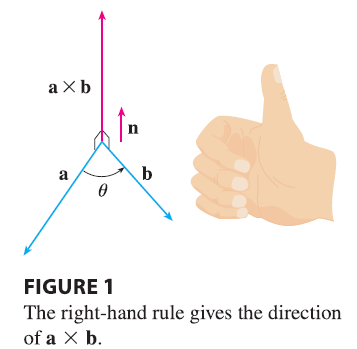

If a and b are represented by directed line segments with the same initial point (as in Figure 1), then Theorem 8 says that the cross product \(\mathbf{a} \times \mathbf{b}\) points in a direction perpendicular to the plane through a and b. It turns out that the direction of \(\mathbf{a} \times \mathbf{b}\) is given by the right-hand rule: if the fingers of your right hand curl in the direction of a rotation (through an angle less than \(180^\circ\)) from a to b, then your thumb points in the direction of \(\mathbf{a} \times \mathbf{b}\).
Now that we know the direction of the vector \(\mathbf{a} \times \mathbf{b}\), the remaining thing we need to complete its geometric description is its length \(|\mathbf{a} \times \mathbf{b}|\). This is given by the following theorem.
Theorem 9 If \(\theta\) is the angle between a and b (so \(0 \le \theta \le \pi\)), then \[ |\mathbf{a} \times \mathbf{b}| = |\mathbf{a}||\mathbf{b}|\sin\theta \]
PROOF From the definitions of the cross product and length of a vector, we have \[ |\mathbf{a} \times \mathbf{b}|^2 = (a_2b_3 - a_3b_2)^2 + (a_3b_1 - a_1b_3)^2 + (a_1b_2 - a_2b_1)^2 \] \[ = a_2^2b_3^2 - 2a_2a_3b_2b_3 + a_3^2b_2^2 + a_3^2b_1^2 - 2a_1a_3b_1b_3 + a_1^2b_3^2 + a_1^2b_2^2 - 2a_1a_2b_1b_2 + a_2^2b_1^2 \] \[ = (a_1^2 + a_2^2 + a_3^2)(b_1^2 + b_2^2 + b_3^2) - (a_1b_1 + a_2b_2 + a_3b_3)^2 \] \[ = |\mathbf{a}|^2|\mathbf{b}|^2 - (\mathbf{a} \cdot \mathbf{b})^2 = |\mathbf{a}|^2|\mathbf{b}|^2 - |\mathbf{a}|^2|\mathbf{b}|^2\cos^2\theta \quad (\text{by Theorem 12.3.3}) \] \[ = |\mathbf{a}|^2|\mathbf{b}|^2(1 - \cos^2\theta) = |\mathbf{a}|^2|\mathbf{b}|^2\sin^2\theta \] Taking square roots and observing that \(\sqrt{\sin^2\theta} = \sin\theta\) because \(\sin\theta \ge 0\) when \(0 \le \theta \le \pi\), we have \[ |\mathbf{a} \times \mathbf{b}| = |\mathbf{a}||\mathbf{b}|\sin\theta \] Since a vector is completely determined by its magnitude and direction, we can now say that \(\mathbf{a} \times \mathbf{b}\) is the vector that is perpendicular to both a and b, whose orientation is determined by the right-hand rule, and whose length is \(|\mathbf{a}||\mathbf{b}|\sin\theta\). In fact, that is exactly how physicists define \(\mathbf{a} \times \mathbf{b}\).
Corollary 10 Two nonzero vectors a and b are parallel if and only if \[ \mathbf{a} \times \mathbf{b} = \mathbf{0} \]
PROOF Two nonzero vectors a and b are parallel if and only if \(\theta = 0\) or \(\pi\). In either case \(\sin\theta = 0\), so \(|\mathbf{a} \times \mathbf{b}| = 0\) and therefore \(\mathbf{a} \times \mathbf{b} = \mathbf{0}\).
The geometric interpretation of Theorem 9 can be seen by looking at Figure 2. If a and b are represented by directed line segments with the same initial point, then they determine a parallelogram with base \(|\mathbf{a}|\), altitude \(|\mathbf{b}|\sin\theta\), and area \[ A = |\mathbf{a}|(|\mathbf{b}|\sin\theta) = |\mathbf{a} \times \mathbf{b}| \] Thus we have the following way of interpreting the magnitude of a cross product.